玩家血条与被接触攻击
本节学习目标
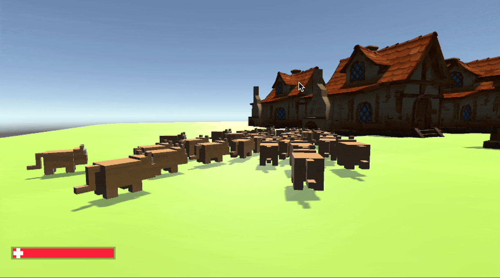
本课要做出来的效果
前面十几课做的全是场景里的 3D 物体：有位置、有大小，相机看得见才看得见。这一课第一次碰游戏 UI——贴在屏幕上的东西。
做完的样子：屏幕左下角一条血条，玩家跑遍地图它都待在原地；敌人扑上来咬一口，红条就短一截；同一只咬完要隔一秒才咬第二口。
fillAmount（0～1）添加画布 · 右键 UI → 画布
工程里现在一张画布都没有——前面做的全是 3D 物体。血条要贴在屏幕上，就得先有一块画布挂着它。这一页先把画布建出来、把名字定好，下一页再回头讲它到底是什么。
① 在层级窗口里右键
在层级（Hierarchy）窗口的空白处点右键 → UI → 画布（Canvas）。
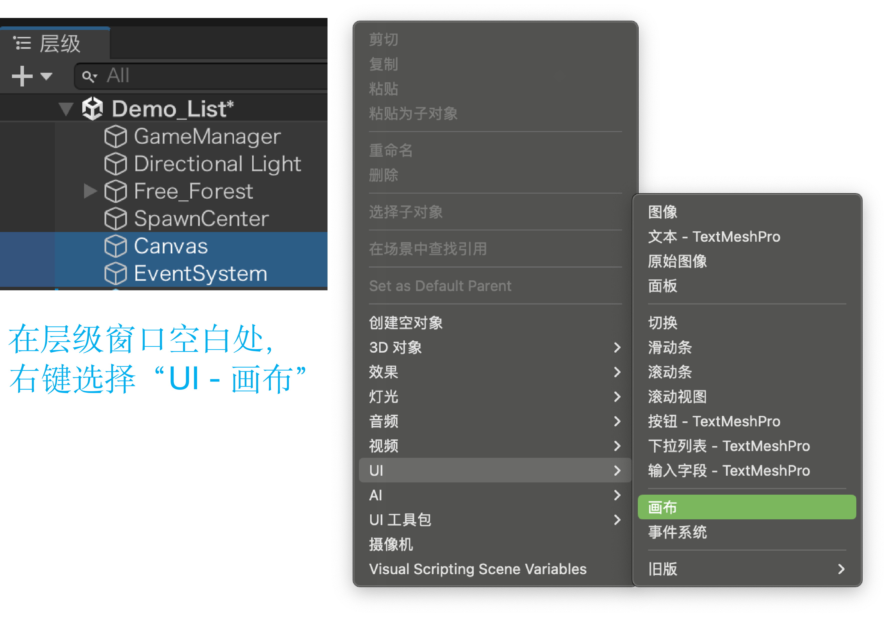
② 一次会多出两个对象
Canvas：画布本体，血条要挂在它下面EventSystem：事件系统，Unity 顺手一起建的，管「鼠标点上去能不能命中 UI」。本课血条不点它，但别删——删了以后做按钮会点不动
EventSystem 不在画布底下，它是场景里独立的一个对象，这是正常的，别把它拖进画布。
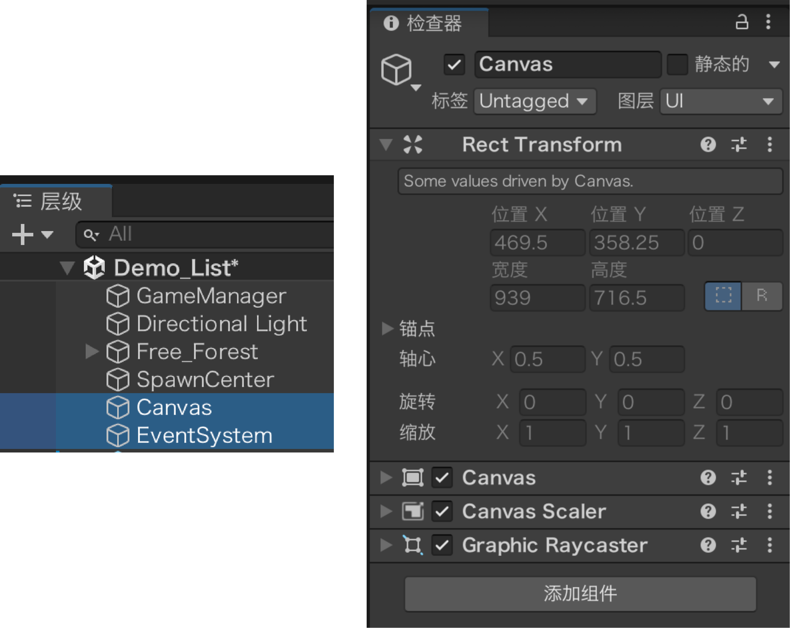
③ 改名 GameUI
选中画布，在检查器（Inspector）最上面的名字框里把 Canvas 改成 GameUI。后面找血条、找画布，都按这个名字认。
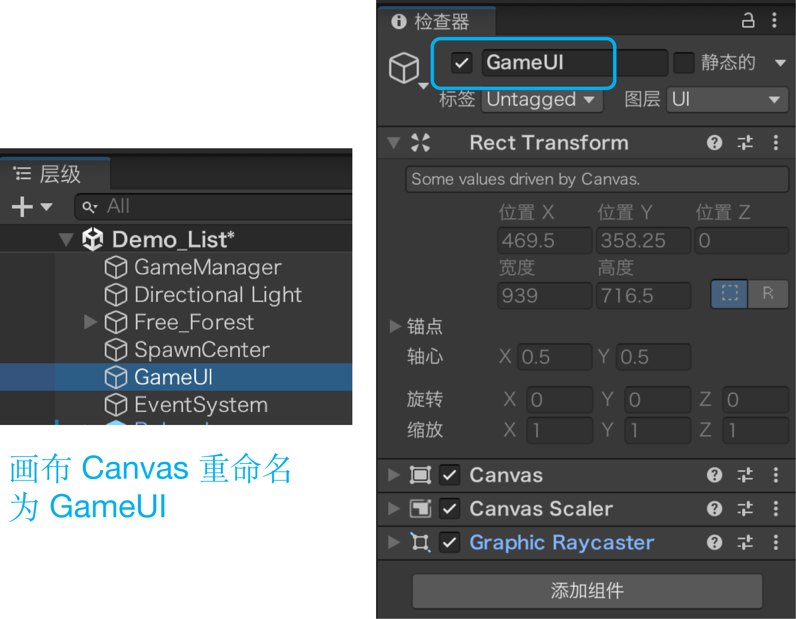
中英对照：这几个词后面天天用
| 中文 | English | 干什么用 |
|---|---|---|
| 画布 | Canvas | UI 的底板，所有 UI 元素的爹 |
| 事件系统 | EventSystem | 按钮、输入框的点击命中 |
| 图像 | Image | 画血条的底板和红条 |
| 文本 | Text | 显示血量数字（作业用） |
| 画布组 | Canvas Group | 一次调整整组 UI 的透明度 |
| 矩形变换 | Rect Transform | UI 元素的位置与大小 |
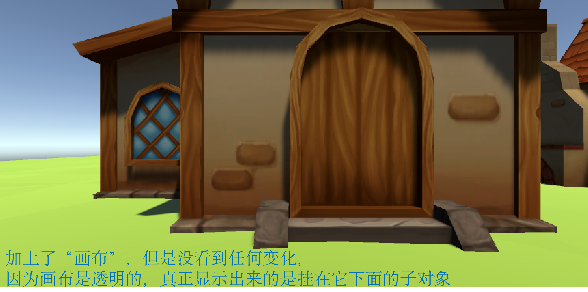
它的位置、大小这些设置先别动——下一页说它是干什么用的，再下一页专门讲怎么设。
画布 · 游戏 UI 的底板
画布（Canvas）· 它到底是什么
上一步右键建出来的 GameUI，就是画布（Canvas）。Unity 把「要显示在屏幕上的东西」统一画在一块专用的平面上，这块平面就是画布——它是 Unity 里所有 UI 的落脚点。
画布上的元素按层次一层层往上叠：底板在最下，红条盖在底板上，图标再盖上去。这一整块就是游戏 UI（用户界面）。
画布本身不提供任何内容，它的作用就是给这些元素当底板。
画布上装的东西，和 3D 物体差在哪
| 对比项 | 3D 物体（动物、房屋、玩家） | UI（血条） |
|---|---|---|
| 在哪 | 场景里有真实位置，相机一转就跟着变 | 屏幕上固定的位置，玩家怎么跑都不动 |
| 会被挡住吗 | 被墙、房子挡住就看不见 | 永远画在最上层，什么都挡不住 |
血条这类东西，不属于 3D 世界，只属于屏幕——所以才必须挂到画布上，靠画布统一画出来。
三条必须记住的规则
- UI 元素必须是画布的子对象：不在画布底下的图像、文本，Unity 不会把它当 UI 画出来，建了也看不见
- 画布只要一块：本课的血条、以后的准心、提示文字，全都挂在
GameUI下面，不用每做一个界面就新建一块画布 - UI 的坐标是屏幕坐标：锚点定在屏幕哪个角，它就跟着哪个角走，跟玩家跑多远、转多少度没关系
画布设置 · 缩放与渲染模式
画布身上有三个组件
选中 GameUI，检查器里是三个组件：画布（Canvas）、画布缩放器（Canvas Scaler）、图形射线检测器（Graphic Raycaster）。本课只动前两个；第三个管鼠标点击，做按钮才用得上，先不用管。
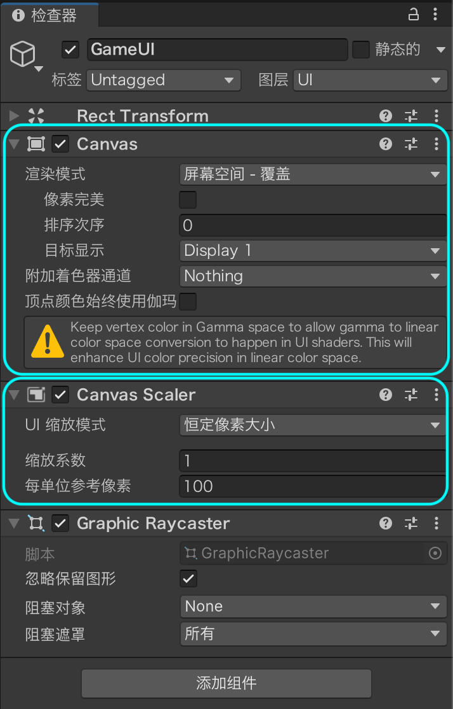
渲染模式：UI 画在哪儿
上一页的对比表里说，UI 永远画在最上层、什么都挡不住——其实这条不是绝对的，取决于渲染模式这一项怎么选。
| 渲染模式 | 什么意思 | 什么时候用 |
|---|---|---|
| 屏幕空间-覆盖 Screen Space - Overlay | 直接画在屏幕最上层，跟相机没关系，也不会被任何 3D 物体挡住 | 本课的血条、以后的准心和提示文字（默认值） |
| 屏幕空间-摄像机 Screen Space - Camera | 画在指定相机前面，靠近相机的 3D 物体能挡住它 | 想让 UI 被场景里的东西遮挡时 |
| 世界空间 World Space | UI 变成场景里的一个平面，有真实位置和朝向 | 敌人头顶血条、墙上的告示牌 |
本课保持默认的屏幕空间-覆盖不动。选它之后，画布的位置和宽高根本不用管：在 Scene 里拖它、改那几个数字都不起作用，它永远铺满 Game 视图。
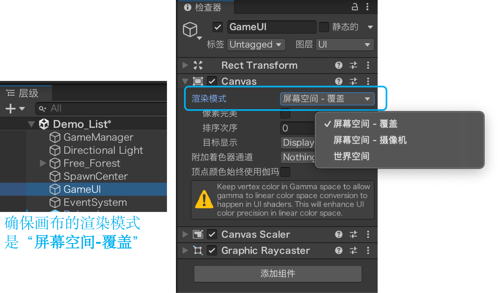
画布缩放器：换分辨率不变形
这是本课最容易踩的坑：默认的「恒定像素大小」会让 UI 按像素算大小。1920×1080 上调好的血条，到了 1366×768 的笔记本上就占掉半屏，投到教室大屏又小得看不见。
- UI 缩放模式（UI Scale Mode） 选 随屏幕大小缩放（Scale With Screen Size）
- 参考分辨率（Reference Resolution） 填
1920×1080——按这个尺寸摆，别的分辨率等比缩放 - 屏幕匹配模式（Screen Match Mode） 选 匹配（Match），Match 拉到
0.5（宽高各占一半权重）
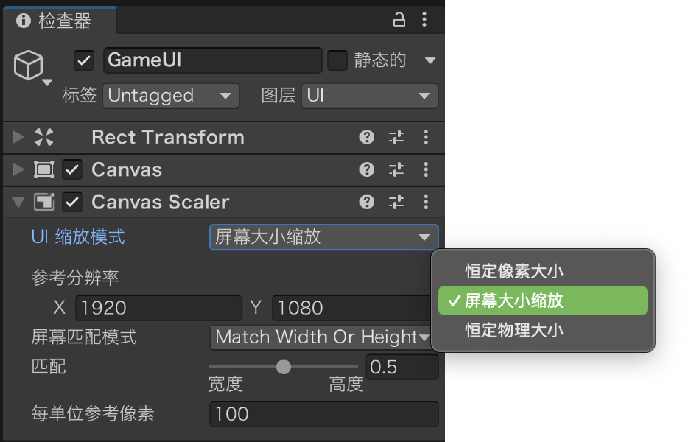
顺手把 Game 视图也定成 1920 × 1080
先说清楚：不设也能用。画布缩放器里的 1920×1080 是设计基准，不是实际运行的分辨率——换台电脑、把窗口拉大拉小，UI 都会按这个基准等比缩放。
但 Game 视图默认是自由比例（Free Aspect），窗口一拉尺寸就变，预览时血条的位置会跟着飘，很容易误以为「哪里没设对」。把 Game 视图左上角的分辨率选成 1920 × 1080，预览就和设计基准对齐，截图、验收、投屏看到的是同一个样子。

血条骨架 · 建 PlayerHealth 空对象
这一页先把血条的骨架搭起来
血条不是一个对象，是三样东西叠起来。这一页先把它们的落脚点建出来：在画布上建一个空对象，再给它加一个控制整组透明度的组件。
接下来两页先把它的位置摆好，再往后三页把三样东西一个个建出来装进去。为什么非得套个空对象，等三样都装完再回头说。位置也先不摆。
① 在画布上建空对象 PlayerHealth
在层级（Hierarchy）窗口里选中 GameUI，右键 → 创建空对象（Create Empty），再把名字改成 PlayerHealth。
一定要在画布上右键——这样它才是画布的子对象；在层级窗口最下面的空白处右键建，对象会跑到画布外面去，血条照样看不见。
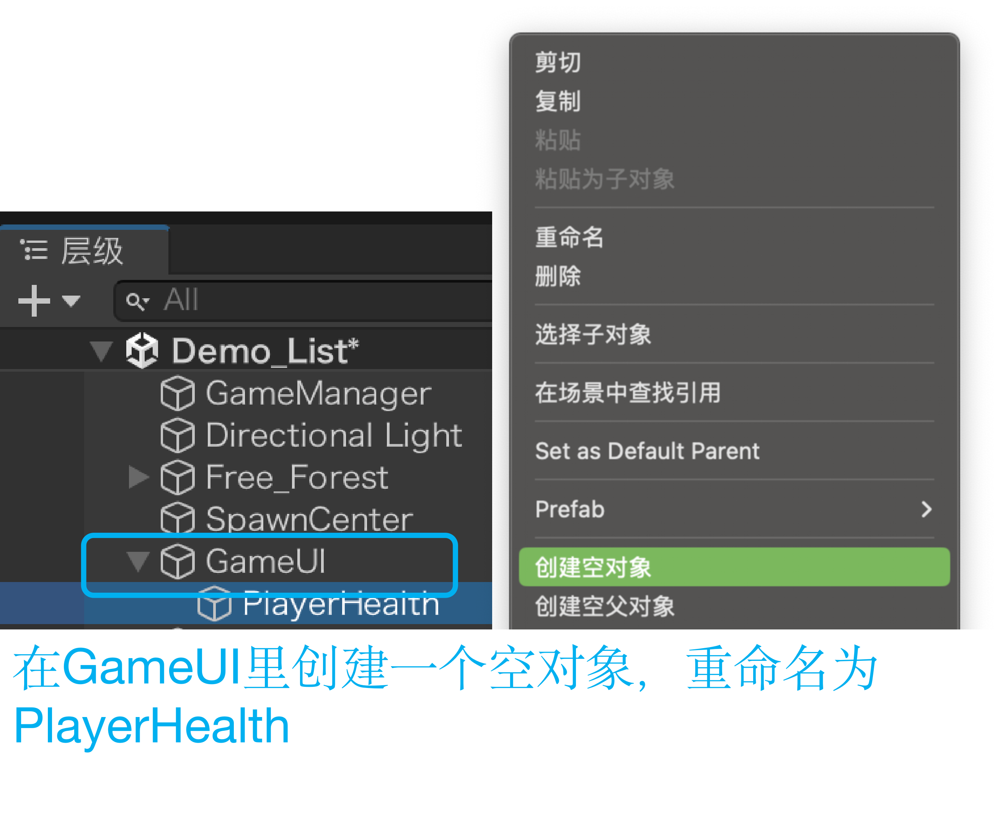
② 加画布组（Canvas Group）
检查器底部点 添加组件（Add Component），搜 Canvas Group 加上。它管这一整组 UI 的透明度 / 能不能点 / 挡不挡射线——一个 Alpha 就能让整条血条淡入淡出，课件21 血量归零就要用它淡出。
现在 Alpha 保持 1，先不用改。
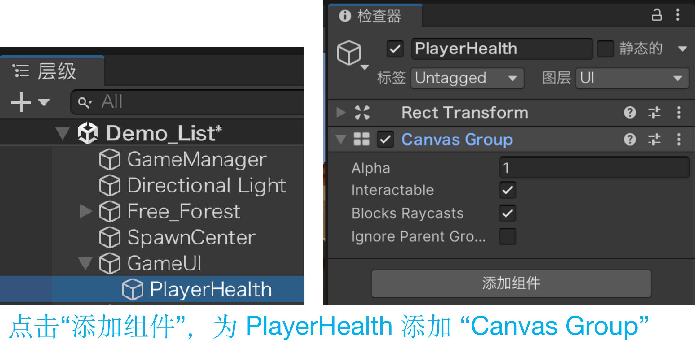
矩形变换 · 锚点与轴心
UI 元素身上没有 Transform，只有 Rect Transform
3D 物体身上是变换（Transform）：位置、旋转、缩放三行。UI 元素身上是矩形变换（Rect Transform）——它多了三样东西：宽度 / 高度、锚点（Anchors）、轴心（Pivot）。
这一页先把后两样看明白：锚点决定贴哪边，轴心决定位置从哪儿量。
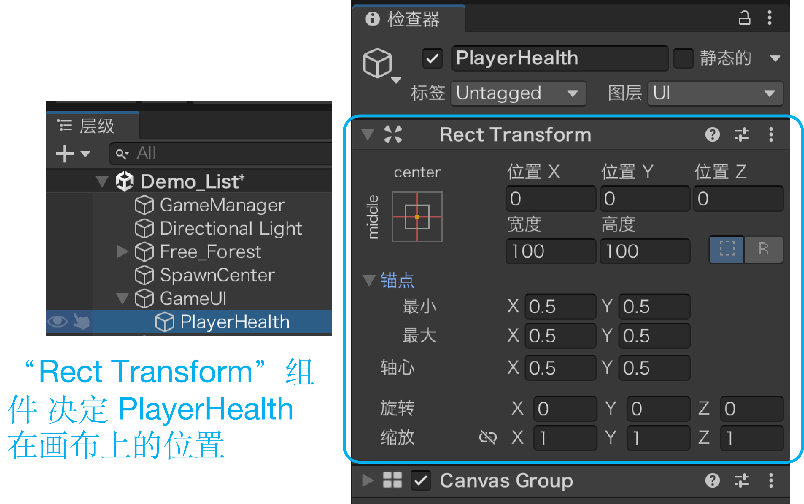
锚点：这个元素「以父对象的哪个点为准」
3D 物体的位置填的是世界坐标——一个点定死就完事。UI 不能这么干：血条要永远贴在屏幕左下，屏幕换成 4K、窗口拉宽拉窄，它还得在左下，写死的坐标一换分辨率就偏了。所以 Rect Transform 里的「位置（Pos X / Pos Y）」记的不是屏幕坐标，而是「离某个参考点多远」。
那个参考点就是锚点：它落在父对象身上（这一课就是画布 GameUI），可选 9 个点，也可以选成一条边。选左下，「位置 X / Y」就变成「离父对象左下角多远」；选居中，就变成「离中心多远」——位置这两个数字的意思，是锚点给的。
锚点决定「贴着谁」，位置决定「离多远」。所以屏幕换成 4K，贴左下的血条还是贴左下，只是按比例往外挪一点——这就是血条永远待在角落的原因。
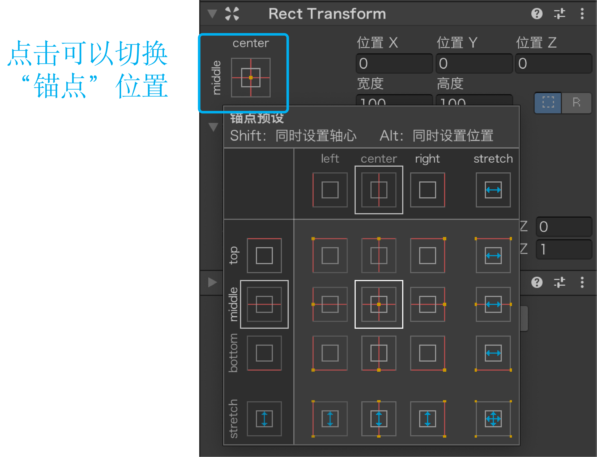
轴心：元素自己身上的基准点
锚点讲的是「贴着父对象的哪一点」，可「位置」这两个数字，究竟是量到元素的哪个点？答案不是左上角，而是轴心（Pivot）。
轴心是元素自己身上的一个基准点，默认就在正中。位置准确说是：轴心这一点，落在离锚点多远的地方。
它不只是个标记：旋转、缩放都绕轴心。轴心挪了，同样一套位置数值，元素就会整体偏出去一段。本课不去动它——轴心留在正中。代价是填位置时要多算半步——量的是元素中心，不是左上角。
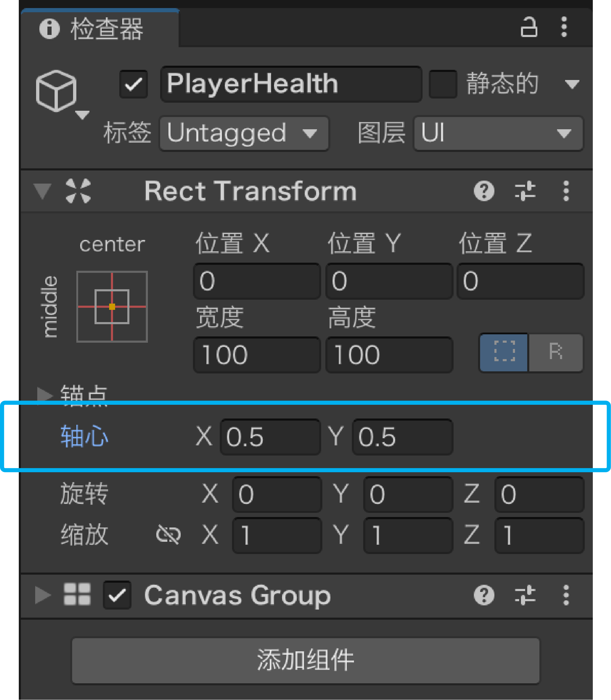
PlayerHealth 摆到左下角。锚点预设 · 把血条摆到左下角
上一页讲清了「位置」这两个数是怎么来的，但还没落到面板上。这一页就在检查器里把它们设上，一步步把 PlayerHealth 摆到屏幕左下角——不用在 Scene 里拖，全靠填数值。
拉伸（Stretch）：父对象多大它就多大
同一个预设面板里，最右边还有一列拉伸预设（横向拉伸 / 纵向拉伸 / 全屏拉伸）。选中之后，「位置」会变成 左（Left）/ 右（Right）/ 顶部（Top）/ 底部（Bottom） 四个偏移——四个都填 0，子元素就和父对象一模一样大。血条的底板、红条都用这个。
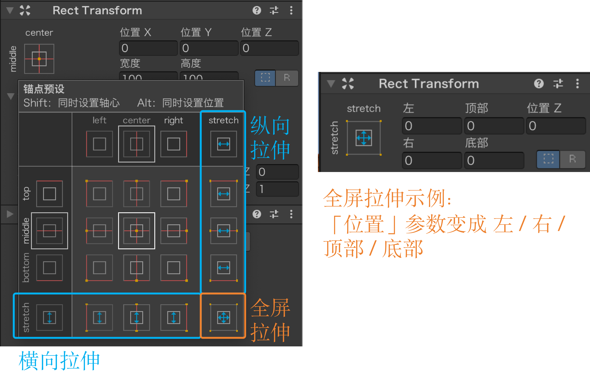
锚点预设：点 Rect Transform 左上角那个方块
面板最左上角有个小方块图标，上面画着当前锚点落在父对象的哪个角落——点它一下，锚点预设就弹出来了。血条的锚点、位置，全都从这儿开始设。
弹出的面板是 3×3 九个点，对应父对象（画布 GameUI）的九个位置：左上、上中、右上、左中……点哪个，锚点就落到哪个位置。最右边那一列是拉伸，上面那张卡刚讲过。
选中左下后，位置会显示 0 / 0——锚点换了，参考点跟着换，0 / 0 就是贴着角，不是出问题；下一步填数值把它挪进来就行。
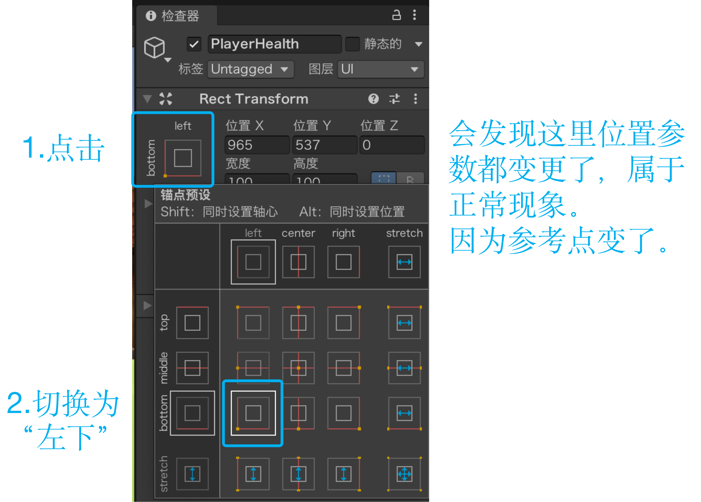
把 PlayerHealth 摆到左下角
选中 PlayerHealth，点矩形变换左上角的预设方块，选 左下；宽度填 400、高度填 50，位置 X 填 250、Y 填 100。
为什么位置不直接填 50 / 75？因为位置量的是元素中心，不是左下角：宽 400 的一半是 200，50 + 200 = 250；高 50 的一半是 25，75 + 25 = 100。这么算下来，血条的左边缘离屏幕左边 50、下边缘离下边 75，整条完整露在屏幕里。数值不用一模一样，按自己的截图摆到差不多就行——但锚点必须是左下。
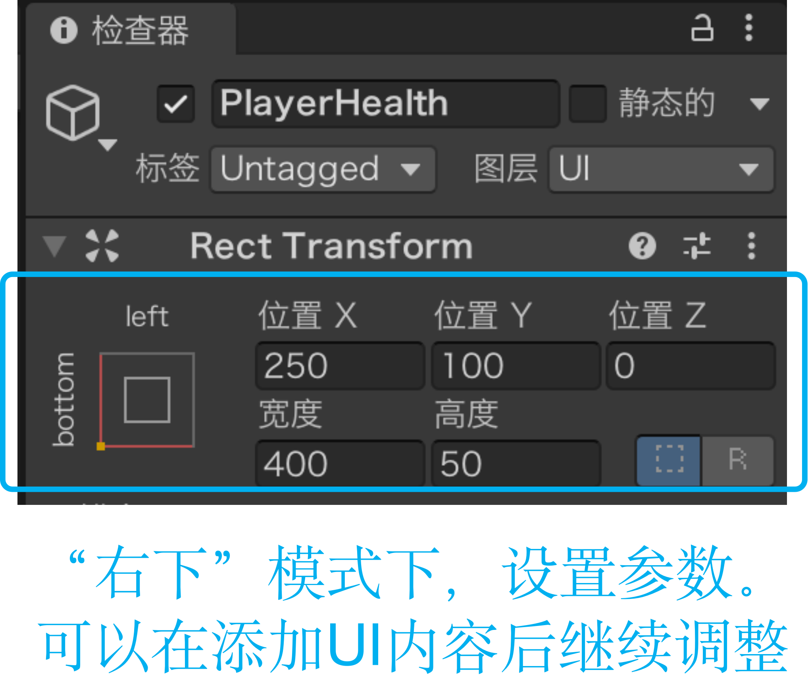
血条底板 · BackgroundImage
底板就是一条半透明的黑条，作用只有一个：让红条在亮堂堂的白天场景里也看得清。
① 建一个 UI 图像
选中 PlayerHealth，右键 → UI → 图像（Image），改名 BackgroundImage。
用「UI → 图像」建出来的对象自带 矩形变换 和 图像（Image） 组件，不用自己加。
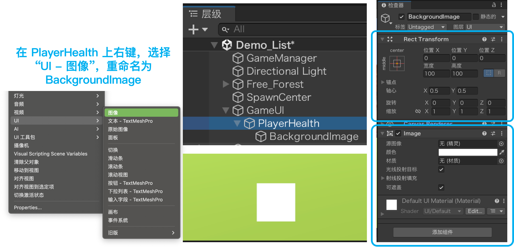
② 拉伸，铺满父对象
点面板最右边的全屏拉伸，再把 左 / 右 / 顶部 / 底部 四个偏移都填 0。底板就和 PlayerHealth 一样大了。
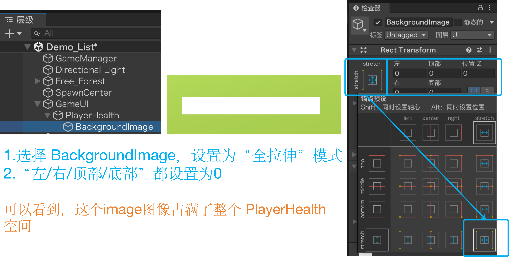
③ 调颜色：黑色 + 半透明
图像组件里点 颜色（Color） 色块，调成黑色，再把 A（Alpha） 拉到 140 左右——A 就是透明度，范围 0～255：255 完全不透明，0 全透明，中间值就是半透明。
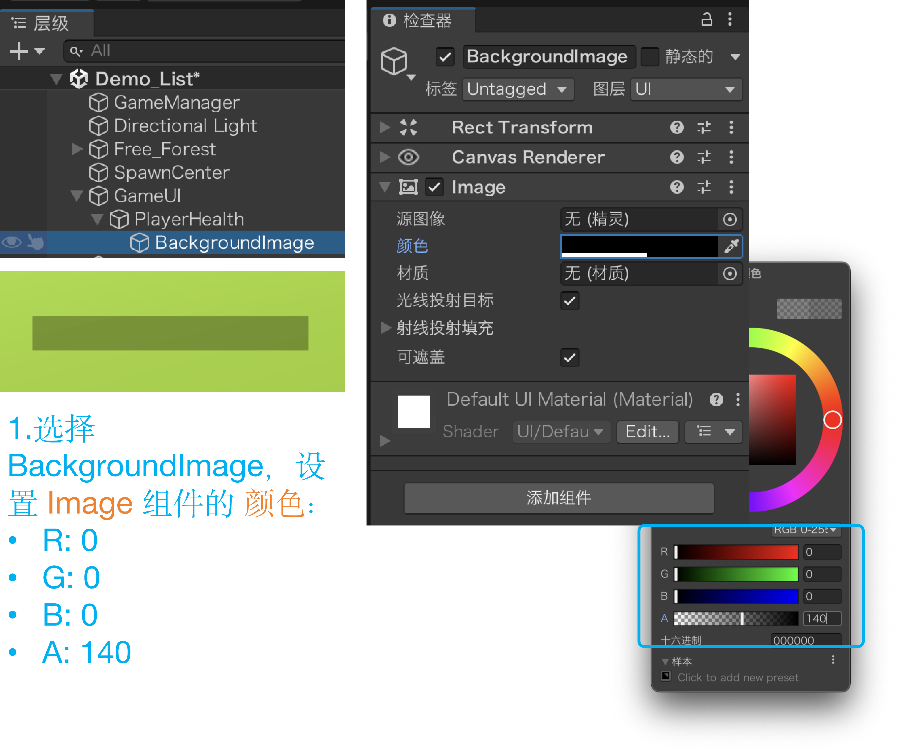
血条填充 · FillImageHealth
这条红条是全场唯一会「变短」的东西——血量的多少，最后全落在它的填充总数（fillAmount）上。
① 再建一个 UI 图像
还是在 PlayerHealth 上右键 → UI → 图像，改名 FillImageHealth。
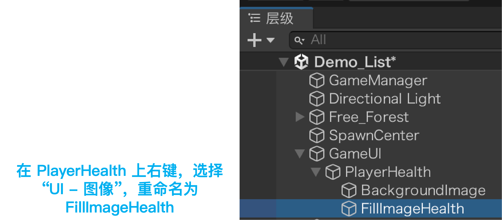
② 源图像：不能留空
从项目窗口往 源图像（Source Image） 槽位拖一张 sprite 进来，用 TEX_White_16x16.png 这张 16×16 的纯白小图就行。它只是一块颜色载体，长什么样不重要，真正显示出来的是下面设的颜色。
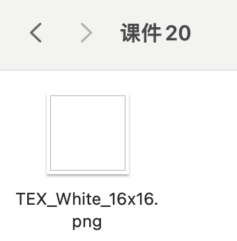
这里不能留空。图像没有源图像时，Unity 会退回「普通矩形」的绘制方式，「已填充」的填充方法、填充原点、填充总数全都不生效——红条永远是满的，血量掉了也不会缩短。（上一页的底板可以留空，是因为底板不需要填充。）
手边没有这张白图也不影响：新建 UI 图像时 Unity 自带的 UISprite 就能用，或者项目里随便一张 sprite 都行，颜色最后都靠「颜色」这一项决定。
③ 图像类型改成「已填充」
图像类型（Image Type） 从「简单」改成 已填充（Filled）。这一步是整节课的关键——只有「已填充」的图像才有「填充总数」，普通图像只能整张显示或整张隐藏。
改完之后下面会多出三项：填充方法（Fill Method）、填充原点（Fill Origin）、填充总数（Fill Amount）。
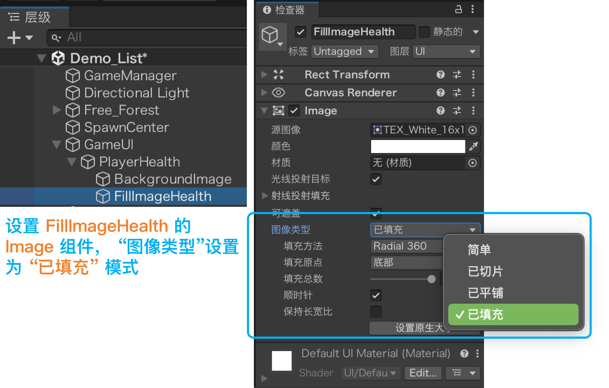
④ 填充方法：水平 + 从左往右
- 填充方法 选 水平（Horizontal）：从一边缩到另一边
- 填充原点 选 左（Left）：从左往右缩，血少的时候先掉右边那一截
- 填充总数 先保持
1（满血）
选「垂直」会变成从下往上缩——那是电梯、载入进度条用的，不是血条。
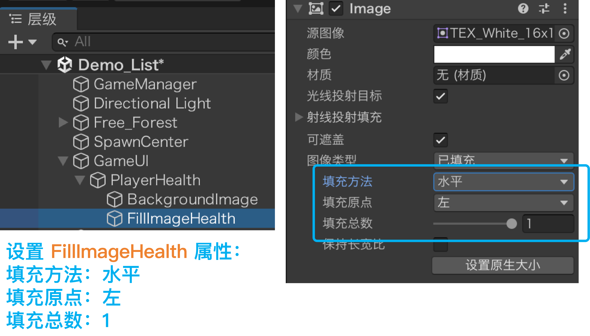
⑤ 调颜色与边距
- 颜色 填 (249, 33, 55)，偏暗的鲜红；用十六进制就是
F92137 - 锚点 同样选全屏拉伸，四个偏移各填
8——红条比底板小一圈，看起来才像「框里灌了血」
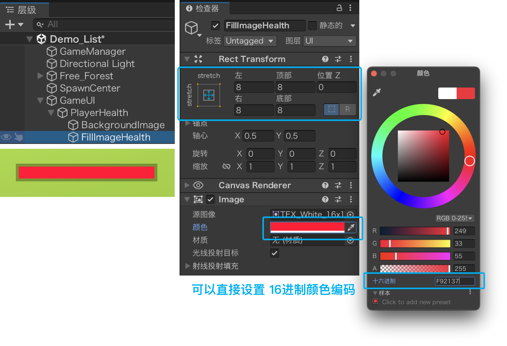
1 = 满，0.5 = 一半，0 = 空。填 50 不会变成一半，而是被当成 1（满格）。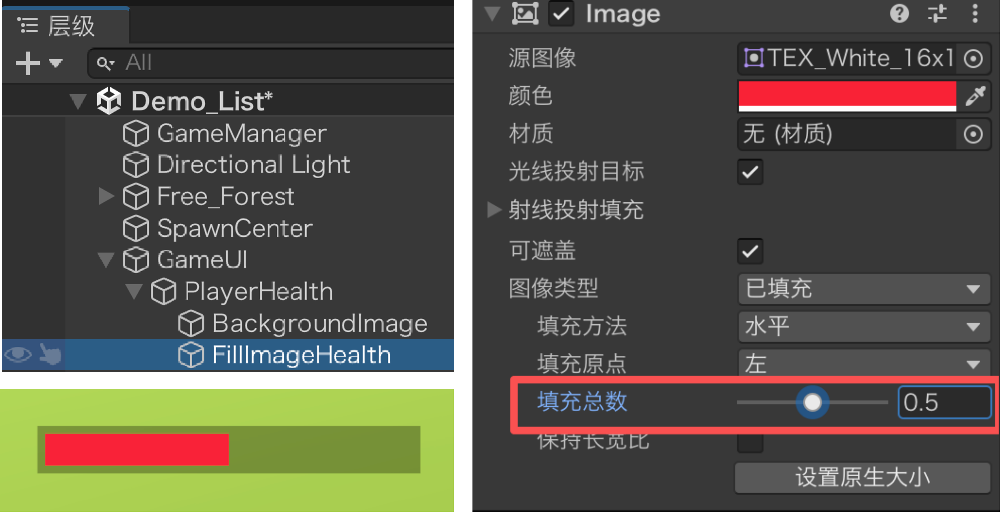
生命图标 · HealthIcon
① 第三个 UI 图像
还是在 PlayerHealth 上右键 → UI → 图像，改名 HealthIcon。
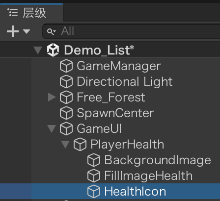
② 源图像选心形图标
源图像拖 HUD_LifeBar_Icon.png（心形图标）。没有图标就随便找一张也行，这一层只是为了好看。
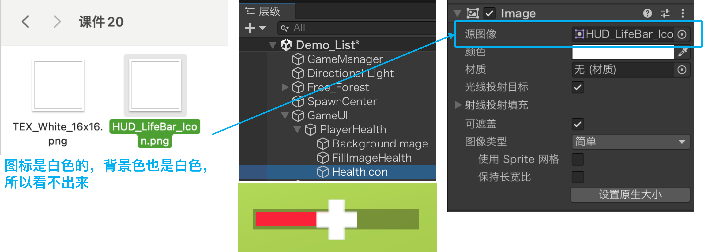
③ 勾上「保持长宽比」
图像组件里把 保持长宽比（Preserve Aspect） 勾上。不勾的话，图标会跟着矩形宽高被拉成扁的或长的。
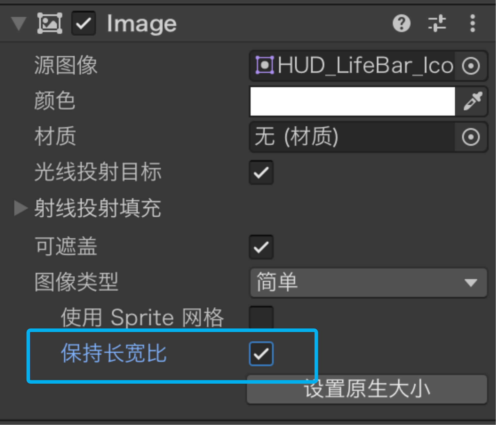
④ 压在血条左端
锚点选 左中（middle-left），位置 X 填 28、Y 填 0，宽度和高度都填 40。
X 填 28 是为了让图标左边和红条左边对齐：红条的左边离父对象左边 8（那是红条自己的四边偏移），图标宽 40、轴心在正中，左边缘等于 X 减 20，所以 X = 8 + 20 = 28。Y 填 0 就行，锚点选的是左中，本来就垂直居中。
高度取 40：父对象高 50，上下各留 5 的余地；红条只有 34 高，图标比它略高一点点，看着像嵌在血条里。宽也给 40，图标才不会被拉扁。
它能压在红条上，是因为它最后建——同级里排在后面的后画，不用另外设置。血量掉得很低时，红条会缩到图标背后，所以后面作业会加血量数字和低血闪烁。
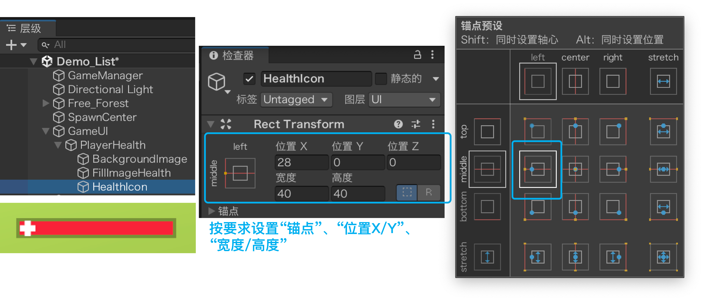
回头看：为什么非要多套一个空对象
三样东西——半透明黑底板、红色填充、生命图标——要一起动、一起淡出。套在同一个空对象底下，以后调位置、调透明度，动这一个就够；三样各自散在画布上，改一次得改三处。
空对象自己不画任何东西，它就是这三样共用的把手。
这也是为什么不干脆用一张图当血条：血条要按比例缩短、要压在底板上、左边还要压一个图标，三件事分开做才简单，合在一张图里就改不动了。以后做蓝条、经验条、Boss 血条，都是这个三段式。
摆放验收 · 让血条待在左下角
对一遍四样东西的位置
| 对象 | 锚点 | 应该长什么样 |
|---|---|---|
PlayerHealth | 左下 | 整条血条离屏幕左边 50、下边 75 |
BackgroundImage | 全屏拉伸 + 四边 0 | 和 PlayerHealth 一样大，半透明黑 |
FillImageHealth | 全屏拉伸 + 四边 8 | 比底板小一圈的红色条 |
HealthIcon | 左中 | 贴在血条左端，垂直居中 |
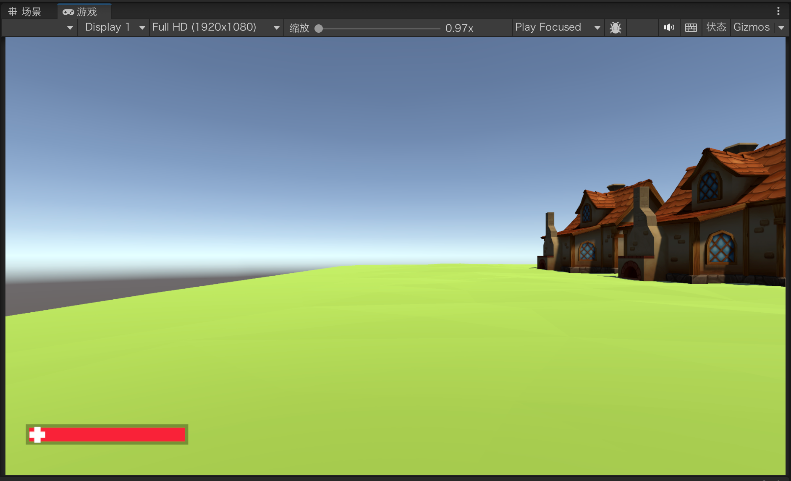
不用运行也能看见
切到 Game 视图（不用点播放），血条就已经在左下角了——UI 是直接画在屏幕上的，跟有没有运行无关。运行之后按 WASD 跑一圈、转个身：血条一动不动，这才对。
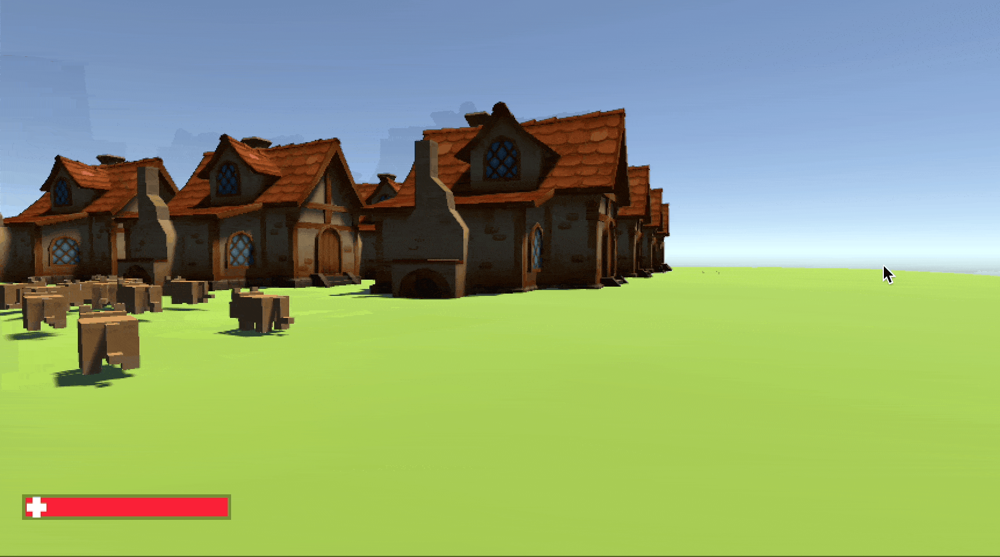
再验一次缩放
Game 视图左上角把分辨率从 1920×1080 依次换成 1366×768、Free Aspect 各看一遍：血条的相对位置和比例不变。这就是「画布设置」那一页画布缩放器干的活——没设它的话，小窗口里血条会顶到屏幕外去。
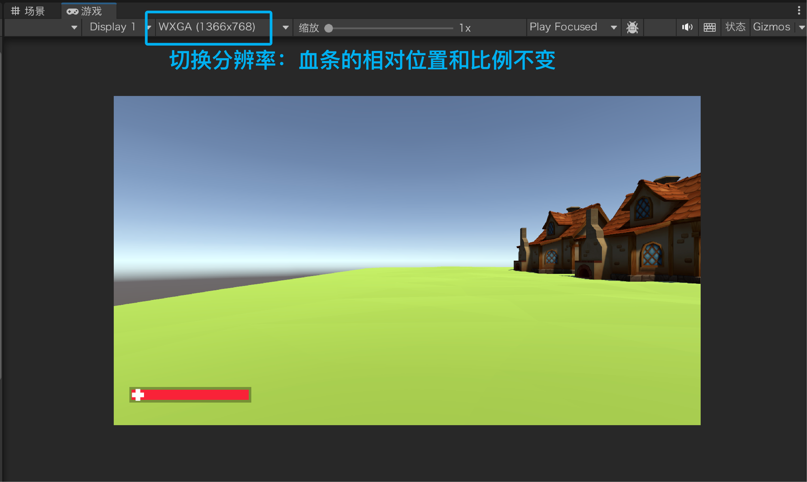
PlayerHealth 一个的宽度和位置就行——底板和红条是拉伸的，会跟着一起变。这就是套一层父对象的好处。血条原理 · 只改一个 fillAmount
血条摆好了，可它一直是满的——因为还没有东西能让它变短。这一页把玩家这一侧的管血脚本建起来：血量存在哪、血条又怎么跟着变，全在这一个文件里。先建好挂上，再回头看它整段长什么样。
① 先建脚本，挂到 Player 身上
在项目窗口右键 → 创建（Create）→ C# 脚本，命名 HealthChange（大小写要和类名一致），再把它拖到层级里的 Player 上。挂好之后，检查器里就会出现这个脚本的组件和它那几个字段——下面要讲的代码就装在这个文件里。
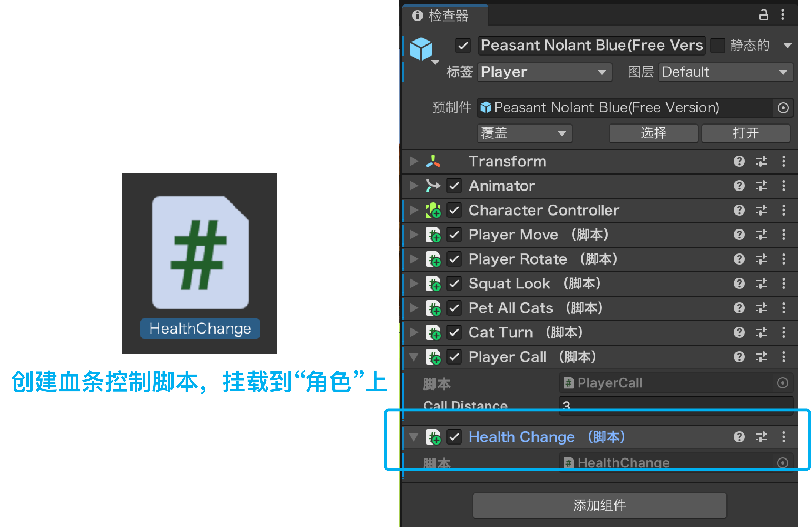
先看全貌：整段脚本长这样
这一课的脚本只有一个文件 HealthChange.cs，全部内容就是下面这段。不用逐行读懂，先认个脸熟——后面几页都是围着它转的。
using UnityEngine;
using UnityEngine.UI; // 要用 Image，必须带上这一行
public class HealthChange : MonoBehaviour
{
public float MaxHealth = 100f; // 满血
public float CurrentHealth; // 当前血量
public Image healthFillImage; // 血条上那条红条，检查器里拖进来
void Start()
{
CurrentHealth = MaxHealth; // 开局满血
UpdateHealth();
}
// 扣血：敌人咬到时会调这个方法，扣完立刻刷新血条
// damage：这一口掉多少血，由敌人把它自己的攻击力传进来
public void TakeDamage(float damage)
{
// 血已经空了，就不再吃伤害（动物还在咬也没用）
if (CurrentHealth <= 0) return;
CurrentHealth = CurrentHealth - damage;
if (CurrentHealth < 0) CurrentHealth = 0;
UpdateHealth();
}
// 把血量换算成 0~1，交给红条
void UpdateHealth()
{
if (healthFillImage != null)
{
healthFillImage.fillAmount = CurrentHealth / MaxHealth;
}
}
}血条相关的变量只有三个，先记住它们各自是什么、谁给它值：
| 变量 | 是什么 | 值从哪来 |
|---|---|---|
MaxHealth | 满血是多少 | 脚本里默认 100，检查器里也能改 |
CurrentHealth | 现在还剩多少血 | Start() 里先设成满血，被撞时减 |
healthFillImage | 红条那个 Image 组件 | 检查器里把 FillImageHealth 拖进槽位——等「玩家扣血」那一页再拖 |
整段脚本连注释才三十几行，跟血条长短真正有关的只有一句。血条变短这件事 Unity 已经替我们算好了：只要给填充总数（fillAmount） 一个 0～1 的数，它自己把红条画到相应长度。所以要写的只有：
healthFillImage.fillAmount = CurrentHealth / MaxHealth;血量 100、满血 100，除出来是 1，满格；50 / 100 是 0.5，一半；0 就是空的。
这就是游戏 UI 的分工
| 谁 | 负责 | 本课对应 |
|---|---|---|
| 数据 | 血量还剩多少 | HealthChange 里的 CurrentHealth |
| 显示 | 把数字画成一根条 | FillImageHealth 的 fillAmount |
| 联系 | 一句赋值 | fillAmount = CurrentHealth / MaxHealth |
把「数据」和「显示」分开，好处是改显示不用动数据：想把血条换成圆环、换成数字百分比，只改 UI 就行，脚本那行公式一个字都不用改。
MaxHealth，不是当前血量。写成 CurrentHealth / CurrentHealth 永远是 1，血条永远满格——这个错很难一眼看出来，因为画面「看起来很正常」。敌人准备 · 碰撞体与 Player 标签
血条和扣血的脚本都齐了，可它还是满的——因为还没人真去扣。这一课让动物扑到你身边咬一口。动手之前先确认两样东西：
- 碰撞体（Collider）：动物的身子是「实心」的，玩家撞不进动物里，也不会和它叠在一起
- Player 标签（Tag）：下一页的代码要让动物自己找到玩家，靠的就是玩家身上这个标签
① 六个动物的碰撞体早就有了
不用新加——课件16 给动物建「空壳」的时候，就把 盒型碰撞体（Box Collider） 一起加上去了，六种动物（NewCat、NewChiken、NewCow、NewElephent、NewLLama、NewPig）全都有，边框也照着身子拖过。这一课只做确认。
- 确认：双击预制体进去，选中最外层那个空壳（跟
AnimalRoam这些脚本同一层，不是它里面的模型），检查器里能看到盒型碰撞体，场景里那圈绿框裹着动物 - 万一被删了：添加组件 → 盒型碰撞体（Box Collider），点「编辑碰撞体（Edit Collider）」把绿框拖到贴合——课件16 做过的动作
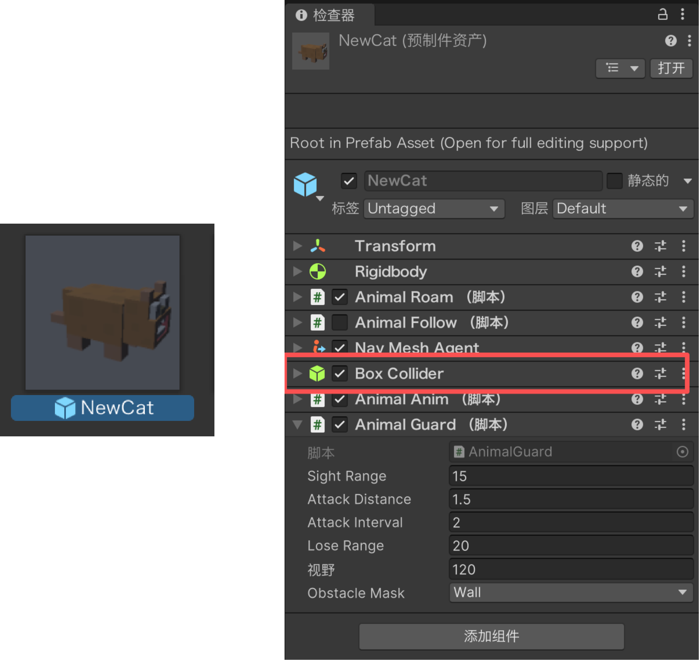
② 千万别勾 Is Trigger
盒型碰撞体上有一个 是触发器（Is Trigger） 勾选框，不要勾。
勾上之后这个碰撞体就不再「挡人」了：玩家会直接从动物身子里穿过去，两只叠在一起，看起来像动物根本没有实体。
但它管不着掉血：这一课的伤害按距离算，不看碰撞——勾上照样会掉血，只是玩家能穿进动物身子里。别因为「反正还能咬」就去勾它。
③ 确认玩家身上有 Player 标签
- 在层级（Hierarchy）里选中
Player - 看检查器最上方的 标签（Tag） 下拉，是不是
Player；不是就选成Player
Player 是 Unity 自带的标签，不用新建，下拉里直接有。名字和标签是两回事：对象可以叫 Player 而标签仍是 Untagged，代码只认标签、不认名字。
为什么现在要确认它：下一页 EnemyData 里那句 FindGameObjectWithTag("Player") 就是靠它找到你——标签不对，动物找不到玩家，血永远不会掉。课件14 让动物找玩家，用的也是同一个标签。
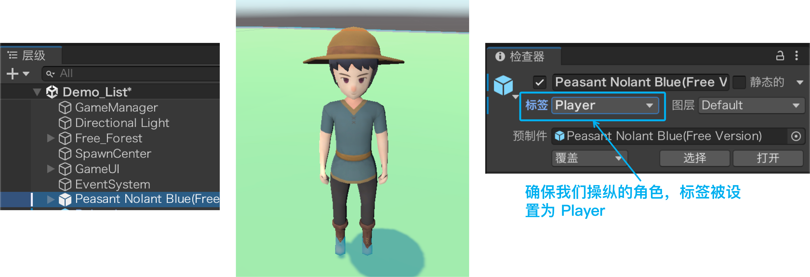
· 双击预制体进去改（上面两步就是这么做的）：六个各改一次，场景里那几只、以及以后生成中心刷出来的，全都跟着变，不用管覆盖。
· 在场景里点中某只动物改：那只是这一只的「覆盖（Overrides）」，预制体本身没动——要在检查器顶部点 覆盖（Overrides）→ 应用全部（Apply All） 才写回预制体。
· ③ 改的是场景里的
Player，它不是预制体，直接改就生效。敌人攻击力 · EnemyData
血条搭好了、碰撞体也确认过了。动物现在会自己发现你、追到跟前停下（课件19 的 AnimalGuard），可它只是站着——既没有「咬」的动作，也不扣你的血（课件17 那套按 F 跟随，课件18 作业里已经连组件一起删掉了）。这一页把「咬」补上，先看清一次咬血到底是怎么发生的：判断是敌人自己做的，结算落在玩家身上。
① 新建 EnemyData.cs，挂到敌人身上
项目（Project）窗口右键 → 创建（Create）→ C# 脚本，命名 EnemyData（大小写要和类名一致）。写完把 6 个动物预制体一起选中，添加组件（Add Component） 搜 Enemy Data（组件列表里中间会多一个空格），一次给六个都挂上。检查器里核对三个数：攻击力（Attack Power） 10、攻击间隔（Attack Interval） 1、攻击范围（Attack Range） 2.2——代码里就是这几个默认值，照着核一遍就行。
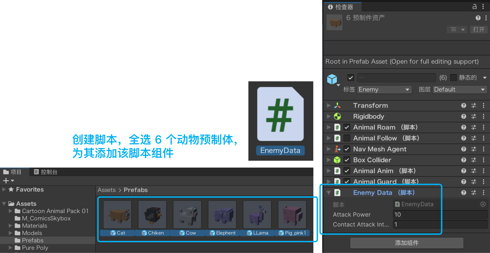
using UnityEngine;
public class EnemyData : MonoBehaviour
{
public float attackPower = 10f; // 每次咬掉多少血
public float attackInterval = 1f; // 两次攻击至少隔几秒
public float attackRange = 2.2f; // 离玩家多近算咬到
private float lastAttackTime; // 上一次攻击的时刻
private HealthChange player; // 玩家身上的扣血脚本
private AnimalAnim anim; // 动物身上的动画脚本
void Start()
{
// 开局找一次玩家（Find 比较慢，别放到 Update 里每帧找）
GameObject find = GameObject.FindGameObjectWithTag("Player");
if (find != null) player = find.GetComponent<HealthChange>();
// 动画脚本就在自己身上（课件18 挂的 AnimalAnim）
anim = GetComponent<AnimalAnim>();
}
void Update()
{
if (player == null) return; // 找不到玩家就什么都不做，避免报空引用
// 只在水平面上量距离：高度差不算，上下坡才不会误判
Vector3 me = transform.position; me.y = 0f;
Vector3 you = player.transform.position; you.y = 0f;
// 够近 + 冷却好了 → 咬一口
if (Vector3.Distance(me, you) <= attackRange
&& Time.time - lastAttackTime >= attackInterval)
{
lastAttackTime = Time.time;
anim.PlayAttack(); // 先动起来，再让玩家掉血
player.TakeDamage(attackPower);
}
}
}② 逐段看
- 三个 public 字段：
public才能在检查器里看到、也才能被别的脚本读到。攻击力决定一口掉多少血，间隔决定多久能咬第二口，范围决定站多远就算咬到。 lastAttackTime为什么是 private：它是内部记账的时间，不需要给人调，所以不写 public。Time.time：游戏从开始跑到现在的秒数，一直在涨。- 为什么一定要有间隔：
Update是每一帧都在跑的——没有间隔，贴着你的那一秒就是几十次扣血，血条一瞬间就空。 Start()里找一次玩家：FindGameObjectWithTag("Player")要遍历整个场景，比较慢（课件14 说过），开局找一次存进变量就行，别放进Update里每帧找；万一没找到，就先空着，Update开头那句if (player == null) return;会兜住，不至于一开局就崩。- 为什么只在水平面量距离：两边
y都置 0 再算——上下坡、站在坎上时，高度差不会让它误判成「离得远」。AnimalGuard用的也是这个做法。 - 为什么是敌人去调
player.TakeDamage()：谁攻击谁发起，玩家只提供「我扣血了」这个接口；以后加陷阱、毒圈、子弹，也是调同一个方法。
③ 咬下去的同时，把动作播出来
光看血条往下掉，看不出是哪一只在咬你。动物身上早就有 AnimalAnim——课件18 挂上去、专管动画的那个脚本，里面就写着 PlayAttack()。咬的时候喊一声就行，上面的全码里已经加好了，就两处：
Start()里补anim = GetComponent<AnimalAnim>();——动画脚本也在自己身上，跟AnimalGuard拿它的方式一样- 咬的那一行前面加
anim.PlayAttack();——先动起来，再让玩家掉血
PlayAttack() 里是 SetTrigger("Attack")，靠 Animator 里的 Attack 触发器——课件18 加的。每只动物的控制器都要加过这个参数：只给猫配了，牛和马咬你就不带动静，缺的回课件18 补上。
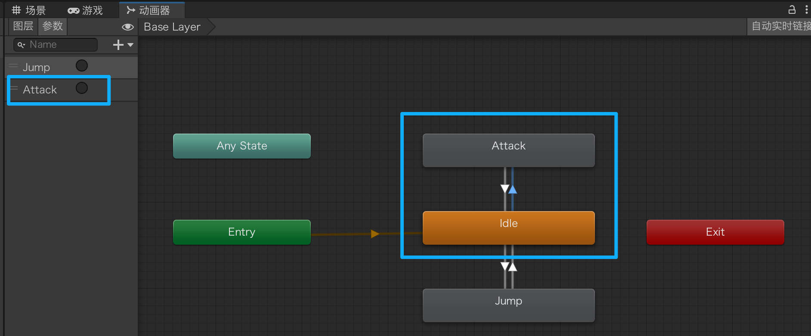
④ 攻击范围为什么填 2.2
课件19 的 AnimalGuard 追到「离你 2 米就停」，动物根本不会贴到你身上。所以攻击范围要略大于 2——填 2.2，动物停在那圈上就已经能咬到你了。
这也是大多数游戏的做法：判定用「范围」而不是「模型真的碰上」，看着像被咬到就够了。想让动物必须撞上来才掉血，把范围调到 1.5 以下即可——但那样只有你主动凑过去才会掉血。
本课玩家没有防御力，所以攻击力就是实际掉的血；以后要是加了护甲，扣血公式写在玩家的
TakeDamage 里，不用回头改敌人。玩家扣血 · HealthChange
脚本在原理页已经建好、挂到 Player 上了（完整代码在「血条原理」那一页）。这一页把它接上血条、再逐段看清它在干什么——玩家这边只做三件事：开局满血、被咬时扣血、把血量画成血条。
① 把红条拖进「生命条填充图」槽位
脚本挂上之后，检查器里多出一个 生命条填充图（Health Fill Image） 槽位。把层级里的 FillImageHealth 拖到这个槽位——脚本就是靠这个引用找到红条的。
不拖会怎样：代码里有 if (healthFillImage != null) 挡着，所以不会报错，但血条一动不动——血在扣，只是没画出来。
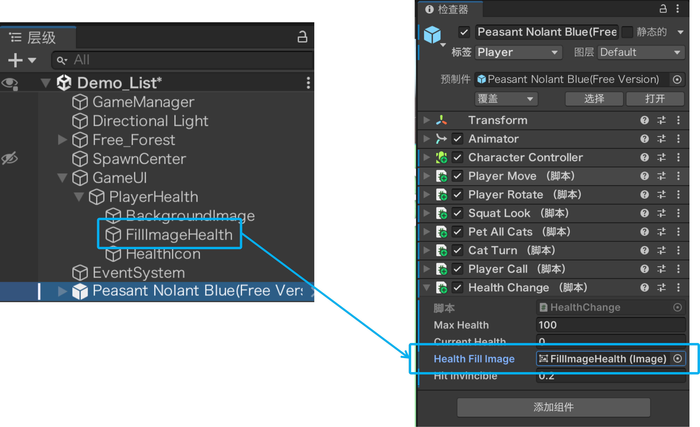
② 逐段看
using UnityEngine.UI;：Image这个类型在UnityEngine.UI里，不写这一行，字段那一行就报「找不到类型 Image」。public void TakeDamage(float damage)：这是给敌人调的接口，括号里的damage就是这一口扣多少血——敌人把自己身上的攻击力传进来。所以敌人那边一句player.TakeDamage(attackPower)，就相当于「咬你一口，扣它攻击力那么多」。写成public，别的脚本才调得到。- 为什么玩家不自己去检测「谁撞我」：角色控制器的
OnControllerColliderHit只在玩家自己移动撞到东西时才响——你站着不动、动物蹭过来，它一声都不响；动物又追到离你 2 米就停下，物理上压根没碰上。所以判定放到敌人那边（上一页的攻击范围），玩家这边只管「掉血」。 - 为什么不加无敌时间：
TakeDamage只做「减血 + 刷新」，谁咬就扣谁那一口——三只同时扑上来就是一次−30，血条当场掉三截。频率已经由敌人那边管住了（每只各自隔 1 秒才咬一次），玩家这边不用再拦；六只围满就是每秒 60 血，不到两秒清空。想扛久一点，改敌人的攻击力或攻击间隔（比如 5 / 1.5 秒）。 - 两条血量保护：开头
if (CurrentHealth <= 0) return;——血空了就不再吃伤害，动物还在咬也没用（死亡怎么处理是课件21 的事）；扣完if (CurrentHealth < 0) CurrentHealth = 0;——防一次大伤害扣成负数，fillAmount拿到负值会反向填充，看着像在回血。 Start()里先满血：CurrentHealth默认为 0，不初始化的话开局血条就是空的。UpdateHealth()：把当前血量换算成 0～1 填给fillAmount。扣血、以后回血，都调这一个方法。
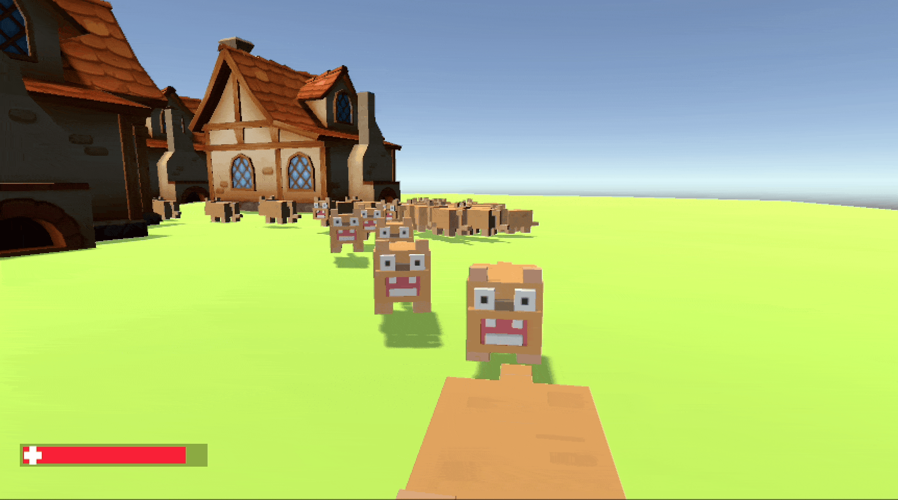
EnemyData ② 攻击范围够不够——动物追到离你 2 米就停，范围要大于 2 ③ 玩家身上的标签是不是 Player（代码靠它找你） ④「生命条填充图」槽位有没有拖东西 ⑤ 红条的图像类型是不是已填充。作业 · 血量数字与低血闪烁
基本要求
血条已经会掉了，但屏幕上只有一个「大概」——剩 30 还是 31，看不出来；血量见底也没有任何提醒。这次作业给血条加两样东西：
- 血量数字：血条右端显示「当前 / 满血」，扣血时跟着变
- 低血闪烁：血量低于 30 时，整条血条开始忽明忽暗
核心要求
- 选中
PlayerHealth，右键 → UI → 旧版 → 文本（Text）（新版 TextMeshPro 要先导入资源，本次不用）；建出来就挂在它下面，改名HealthText——默认只叫Text，再往后层级里就会攒出Text(1)、Text(2)，拖槽位时容易拖错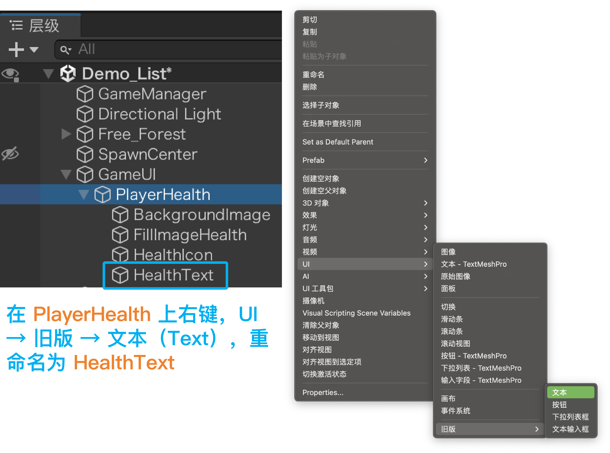
- 锚点选 右中；宽度
160、高度36，位置X = -100、Y = 0；字号30、颜色改成白色、水平对齐选右（Right）、垂直对齐选居中，文本内容先填100 / 100占位——锚点一旦选右中，X的意思就变成「离血条右边缘多远」，填负数才是往血条里缩；这一格要缩8（红条比血条右沿内缩的四边偏移）+ 12（给数字留一点余量，贴着最边不好看）+ 80（文本宽 160 的一半）= 100，数字就落在红条右端稍往里一点的位置；想更贴边就填-88，再往里-110左右也行，照截图微调。字号取30是这 50 高的血条里「塞得下又不发虚」的下限；对齐选右，位数变少（100 / 100变成8 / 100）时数字从右边往左缩，不会飘出条外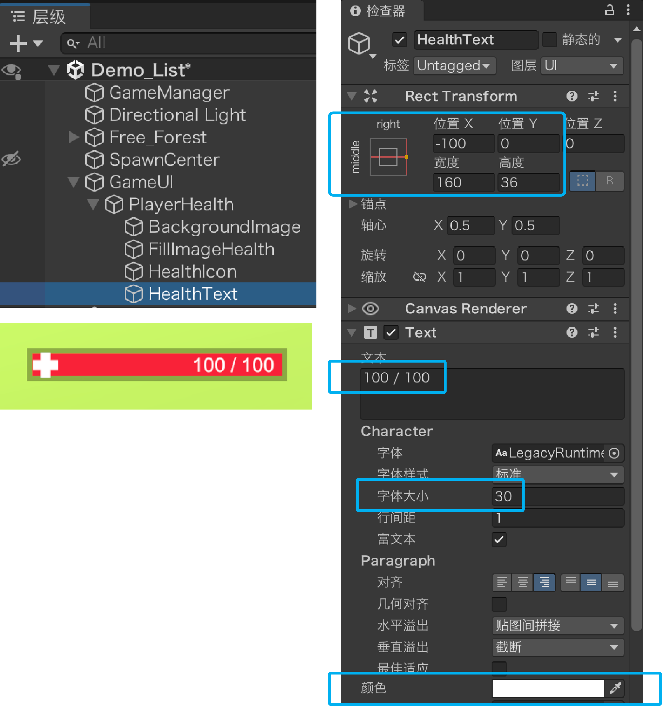
- 闪烁用
PlayerHealth上已经加过的画布组改alpha，不要去改每张图的颜色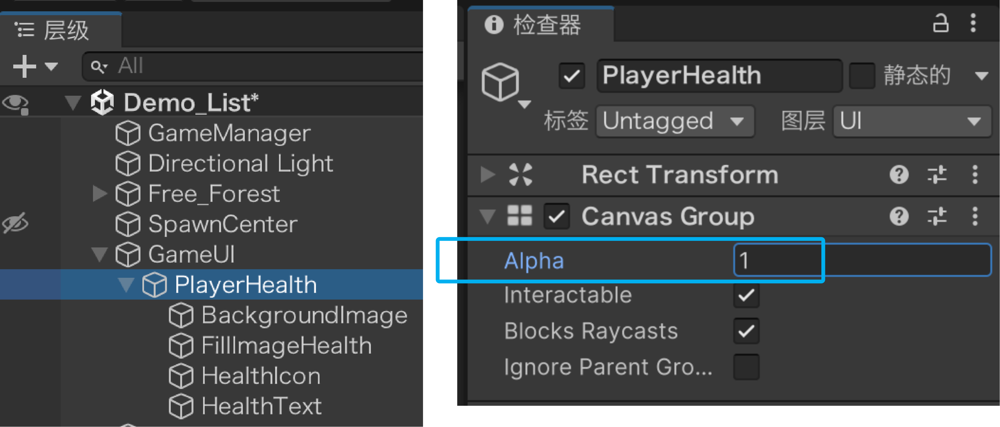
- 闪烁要能自己停下来：血量回到 30 以上，Alpha 必须恢复成 1
本次作业（必做）：补完三段 TODO
新建 HealthHUD.cs，挂在 PlayerHealth 上。骨架如下，三处 TODO 自己写。
using UnityEngine;
using UnityEngine.UI;
public class HealthHUD : MonoBehaviour
{
public HealthChange health; // 玩家身上的扣血脚本
public Text healthText; // 血条上的数字
public float lowHealth = 30f; // 低于这个值开始闪
private CanvasGroup canvasGroup;
void Start()
{
canvasGroup = GetComponent<CanvasGroup>();
}
void Update()
{
if (health == null) return;
// TODO ① 把「当前血量 / 满血」写进 healthText，形如 68 / 100
// TODO ② 血量低于 lowHealth 时，让 canvasGroup.alpha 在 0.3 ~ 1 之间来回闪
// 提示：Mathf.PingPong(Time.time, 1f)
// TODO ③ 血量回到 lowHealth 以上时，把 alpha 恢复成 1
}
}提示
- 两个槽位都要拖：Player 拖进
health，新建的文本拖进healthText——healthText漏了，Update里写数字那一行会直接空引用 - 取血量：
MaxHealth和CurrentHealth都是public，拖好槽位后health.CurrentHealth就能读到 - 闪烁：
Mathf.PingPong(Time.time, 1f)会在 0～1 之间来回走，乘个系数再补个下限就是呼吸灯；不要用Random，会闪得很难看 - 文本：
CurrentHealth.ToString("0")去掉小数，再拼成"68 / 100" - 恢复：血量回到 30 以上，把
alpha写回1f，否则血条会一直是半透明的 - 想让数字待在血条中间：锚点选居中、对齐也选居中、位置
X填0——比用负的 X 去凑更直观，改宽度也不会偏
挑战（选做）
- 低血时把红条颜色改成更刺眼的亮红，血量回上来再改回
F92137 - 加一个「受伤闪红」：被咬的瞬间屏幕边缘红一下（提示：在画布上铺一张全屏红色 Image，Alpha 从 0.4 快速降到 0）
- 把血条做成「延迟掉血」：前面一条浅色残影慢慢追上来，看起来更有打击感